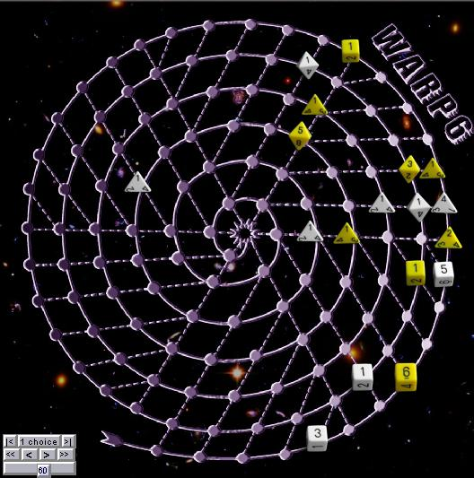

Warp 6
Warp 6 is a race to get 6 ships to the end of a long spiral. The ships are represented by dice,
whose top face determined the movement speed. The trick is that
if ships collide, the moving ship "warps" down to the next level of the
spiral. The dice are only re-rolled after a warp move.
Rules: Start by
rolling your dice, 2-d8 3-d6 and 4-d4. Player take turns placing
one die as close as possible to the start. When all dice have
been placed, players alternate moving one die by the number of spaces
on it's face, or increasing or decreasing a die face by 1. If
dice collide, the warp down through the next
levels, until they reach an empty space or the center. Dice
that warp down are re-rolled. The
first player to get 6 dice to the center wins.
Robots: Dumbot is
good at getting a few ships in, but seems to end up with too many
laggards.
|

|